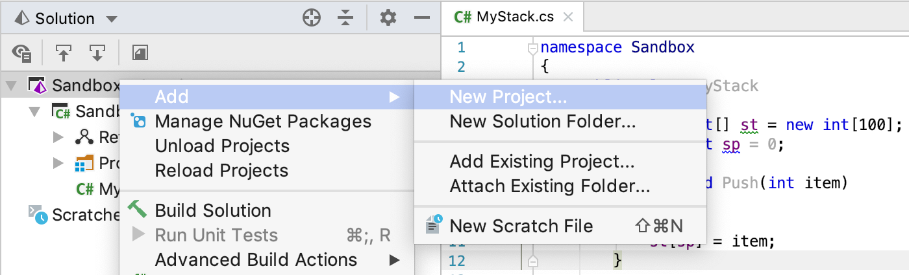
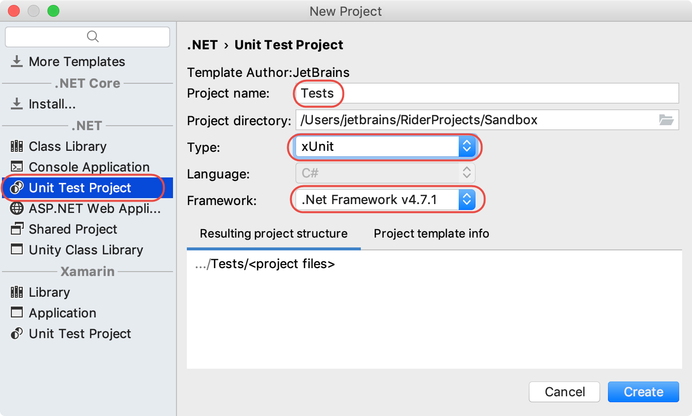
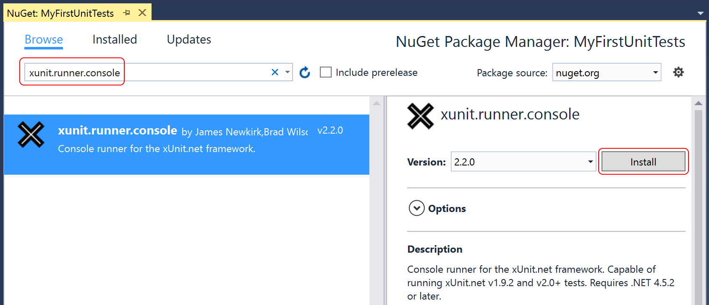
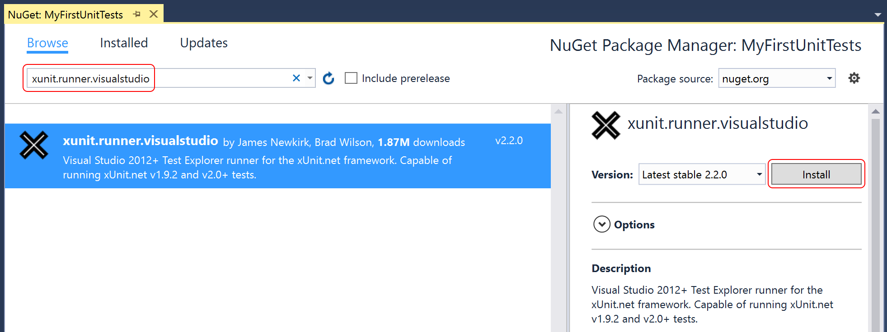
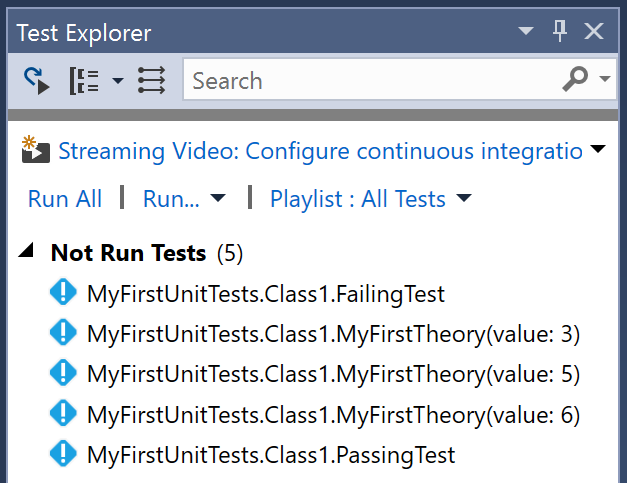
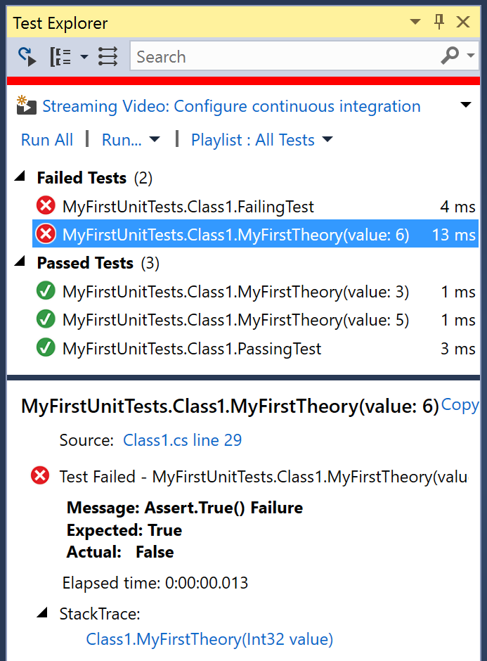

In this article, we will demonstrate getting started with xUnit.net, showing you how to write and run your first set of unit tests.
Note: The examples were done with xUnit.net v2.4 and JetBrains Rider 2018.3. The version numbers, paths, and JetBrains Rider UI may differ for you, depending on which version you're using.
In our example, we have a solution with a single project called Sandbox, which has a class that implements a simple stack functionality.
{% highlight C# %} namespace Sandbox { public class MyStack { private int[] st = new int[100]; private int sp = 0; public void Push(int item) { sp++; st[sp] = item; } public int Pop() => sp == 0 ? 0 : st[sp--]; } } {% endhighlight %}
To test our stack, let's start by creating a project for our xUnit.net tests.
In the Solution Explorer, right-click the solution and choose Add > New Project...:

Choose the Unit Test Project template targeting .NET 4.5.2 or later,
select xUnit as the project type,
and provide some telling name for it, e.g. Tests

When you click Create,
the new test project with all necessary configurations and references will be added to our solution.
When you created the test project, JetBrains Rider automatically created a file named Tests.cs
with a stub for our first test and opened it for you. Inside this class, add a
couple tests:
Build the solution to ensure that the code compiles. Now that you've written the first test, we need a way to run it. Let's install the NuGet package with the console runner.
Once again, right click on the project in Solution Explorer and choose
Manage NuGet Packages. This time, you're going to search for
(and install) a package named xunit.runner.console:

Unlike the previous package (which added references to the unit testing framework), this package is what's known as a solution-level package. Instead of having assemblies to reference, it adds some tools in your solution folder. We will use one of these tools—the console runner—to run your unit tests.
Open a command prompt or PowerShell command window. In the window, navigate to the root folder of your solution.
To run the console runner, use a command like the one highlighted below. You should see output similar to this:
> packages\xunit.runner.console.2.2.0\tools\xunit.console MyFirstUnitTests\bin\Debug\MyFirstUnitTests.dll xUnit.net Console Runner (64-bit .NET 4.0.30319.42000) Discovering: MyFirstUnitTests Discovered: MyFirstUnitTests Starting: MyFirstUnitTests MyFirstUnitTests.Class1.FailingTest [FAIL] Assert.Equal() Failure Expected: 5 Actual: 4 Stack Trace: MyFirstUnitTests\Class1.cs(16,0): at MyFirstUnitTests.Class1.FailingTest() Finished: MyFirstUnitTests === TEST EXECUTION SUMMARY === MyFirstUnitTests Total: 2, Errors: 0, Failed: 1, Skipped: 0, Time: 0.159s
Note: your path names my vary, depending on what name you chose for your project and which version of xUnit.net you installed.
The console runner has several command line options, which include options for parallelization, test filtering, and result reporting. To learn more about the console runner options, run the console runner with no command line options.
Now that we've gotten your first unit tests to run, let's introduce one more way to write tests: using theories.
You may have wondered why your first unit tests use an attribute named
[Fact] rather than one with a more traditional name like Test.
xUnit.net includes support for two different major types of unit tests:
facts and theories. When describing the difference between facts and theories,
we like to say:
Facts are tests which are always true. They test invariant conditions.
Theories are tests which are only true for a particular set of data.
A good example of this testing numeric algorithms. Let's say you want to test an algorithm which determines whether a number is odd or not. If you're writing the positive-side tests (odd numbers), then feeding even numbers into the test would cause it fail, and not because the test or algorithm is wrong.
Let's add a theory to our existing facts (including a bit of bad data, so we can see it fail):
{% highlight C# %} [Theory] [InlineData(3)] [InlineData(5)] [InlineData(6)] public void MyFirstTheory(int value) { Assert.True(IsOdd(value)); } bool IsOdd(int value) { return value % 2 == 1; } {% endhighlight %}This time when we compile and run our tests, we see a second failure, for our theory that was given 6:
xUnit.net Console Runner (64-bit .NET 4.0.30319.42000)
Discovering: MyFirstUnitTests
Discovered: MyFirstUnitTests
Starting: MyFirstUnitTests
MyFirstUnitTests.Class1.MyFirstTheory(value: 6) [FAIL]
Assert.True() Failure
Expected: True
Actual: False
Stack Trace:
MyFirstUnitTests\Class1.cs(30,0): at MyFirstUnitTests.Class1.MyFirstTheory(Int32 value)
MyFirstUnitTests.Class1.FailingTest [FAIL]
Assert.Equal() Failure
Expected: 5
Actual: 4
Stack Trace:
MyFirstUnitTests\Class1.cs(16,0): at MyFirstUnitTests.Class1.FailingTest()
Finished: MyFirstUnitTests
=== TEST EXECUTION SUMMARY ===
MyFirstUnitTests Total: 5, Errors: 0, Failed: 2, Skipped: 0, Time: 0.171s
Although we've only written 3 test methods, the console runner actually ran 5 tests; that's because each theory with its data set is a separate test. Note also that the runner tells you exactly which set of data failed, because it includes the parameter values in the name of the test.
Important note: If you've previously installed the xUnit.net Visual Studio
Runner VSIX (Extension), you must uninstall it first. The Visual Studio runner is only distributed
via NuGet now. To remove it, to go Tools > Extensions and Updates.
Scroll to the bottom of the list, and if xUnit.net is installed, uninstall it. This will force
you to restart Visual Studio.
If you're having problems discovering or running tests, you may be a victim
of a corrupted runner cache inside Visual Studio. To clear this cache, shut down all instances
of Visual Studio, then delete the folder %TEMP%\VisualStudioTestExplorerExtensions.
Also make sure your solution is only linked against a single version of the Visual Studio runner
NuGet package (xunit.runner.visualstudio).
If you have Visual Studio Community (or a paid-for version of Visual Studio), you can run your xUnit.net tests within Visual Studio's built-in test runner (named Test Explorer). Unfortunately, this does not include Express editions of Visual Studio (you should upgrade to the free Community Edition instead).
Right click on the project in Solution Explorer and choose Manage NuGet Packages.
Search for (and install) a package named xunit.runner.visualstudio:

Make sure Test Explorer is visible (go to Test > Windows > Test Explorer). Every
time you build your project, the runner will discover unit tests in your project. After a moment of
discovery, you should see the list of discovered tests:

Click the Run All link in the Test Explorer window, and you should see the results update
in the Test Explorer window as the tests are run:

You can click on a failed test to see the failure message, and the stack trace. You can click on the stack trace lines to take you directly to the failing line of code.
Note: Only xUnit.net v2 supports pre-enumeration of theories; when discovering theories with v1, it will only show a single test method for the theory.
Starting with version 2.2, the following return codes are used by the console runner:
| Return code | Meaning |
|---|---|
0 |
The tests ran successfully. |
1 |
One or more of the tests failed. |
2 |
The help page was shown, either because it was requested, or because the user did not provide any command line arguments. |
3 |
There was a problem with one of the command line options passed to the runner. |
4 |
There was a problem loading one or more of the test assemblies (for example, if a 64-bit only assembly is run with the 32-bit test runner). |
0xC000013A (-1073741510) |
The user canceled the test execution by pressing Ctrl+C. |